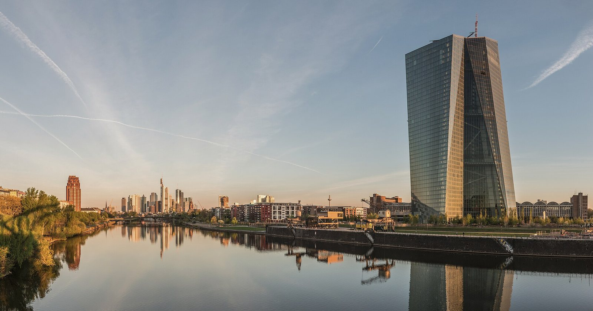

La Banca Centrale Europea (BCE) ha pubblicato giovedì 12 novembre il proprio bollettino economico (Bollettino Economico — Economic Bulletin), che fotografa le condizioni dell'area euro dopo la riunione del 29 ottobre 2026. La sintesi è preoccupante: l'inflazione (tasso di inflazione) dell'Eurozona è salita al 3,8% a settembre, dal 3,2% di agosto, quasi interamente per colpa dell'energia (prezzi energetici). Il Consiglio direttivo non intende vincolarsi a un percorso predefinito dei tassi e deciderà riunione per riunione.
- L'inflazione dell'Eurozona è salita al 3,8% a settembre (dal 3,2% di agosto), spinta quasi interamente dall'energia: i carburanti sono +33% su base annua.
- L'inflazione core (inflazione di fondo) — che esclude energia e alimentari — è al 2,3% (da 2,1%): resta controllata, ma in lenta risalita.
- La BCE avverte: lo shock energetico «comporterà verosimilmente un incremento dell'inflazione e un indebolimento della crescita». Rischi al rialzo per i prezzi, al ribasso per il Pil.
- Il Consiglio non si vincola a un percorso dei tassi: decide riunione per riunione in base ai dati. Il tasso sui depositi è al 2,5%, il tasso principale al 2,65%.
- Le condizioni di finanziamento si sono inasprite dalla riunione del 10 settembre. Prossimi verbali del Consiglio il 26 novembre 2026.
Perché conta: quando la BCE alza i tassi o li mantiene alti, si alzano i mutui e i prestiti bancari in tutta l'Eurozona, Italia compresa. Se l'energia continua a spingere l'inflazione verso l'alto, la BCE ha meno motivi per tagliare i tassi — e il credito alle imprese e alle famiglie resta costoso più a lungo.
L'inflazione sale al 3,8%: la colpa è quasi tutta dell'energia
Secondo il bollettino, nell'area euro l'inflazione complessiva (Headline Inflation — inflazione generale) è salita al 3,8% in settembre dal 3,2% di agosto. La spinta viene quasi interamente dall'energia: i prezzi dei carburanti hanno registrato un balzo del 33% su base annua, riflettendo la corsa del petrolio scatenata dalle tensioni geopolitiche in Medio Oriente. Al netto di questa componente, il quadro è meno allarmante: l'inflazione core (inflazione di fondo), che esclude energia e alimentari freschi, è salita al 2,3% dal 2,1% precedente — appena sopra l'obiettivo del 2% della BCE, ma non in fuga.
| Indicatore | Agosto 2026 | Settembre 2026 |
|---|---|---|
| Inflazione complessiva (Headline) | 3,2% | 3,8% |
| Inflazione core (di fondo) | 2,1% | 2,3% |
| Variazione prezzi carburanti (a/a) | — | +33% |
💡 Impara: inflazione Headline e inflazione Core (di fondo)
L'inflazione Headline misura l'aumento medio dei prezzi di un paniere di beni e servizi che include alimentari ed energia. L'inflazione Core (di fondo) esclude queste due voci, perché oscillano molto per ragioni stagionali o geopolitiche. Le banche centrali guardano soprattutto al core per capire se l'inflazione è strutturale — cioè incorporata nei servizi e nei salari — o solo una fiammata transitoria.
Lo shock energetico: rischi al rialzo per i prezzi, al ribasso per la crescita
Il bollettino identifica nell'energia la principale fonte di rischio. La BCE scrive che i prezzi dell'energia «hanno continuato ad aumentare, ponendo rischi al rialzo per le prospettive di inflazione e al ribasso per quelle di crescita». Lo scenario di uno shock energetico (Energy Shock — crisi energetica) prolungato potrebbe rivelarsi più grave del previsto se le forniture subissero ulteriori interruzioni o se un inverno rigido coincidesse con scorte di gas basse. In questo scenario, l'inflazione tornerebbe a salire e il potere d'acquisto delle famiglie europee si ridurrebbe, frenando la spesa e rallentando il Pil.
Il messaggio della BCE sui tassi: nessun impegno, si decide riunione per riunione
Dopo i rialzi di giugno e settembre 2026 e la pausa di ottobre, il Consiglio direttivo ha ribadito che «non intende vincolarsi a un particolare percorso dei tassi» e deciderà sulla base dei dati che di volta in volta si renderanno disponibili. Le condizioni di finanziamento si sono «inasprite» dall'ultima riunione operativa del 10 settembre. Il messaggio è di attesa vigile: né un impegno a tagliare né una promessa di nuovi rialzi.
| Tasso BCE | Livello attuale | Note |
|---|---|---|
| Tasso sulle operazioni di rifinanziamento principali (tasso principale) | 2,65% | Rialzato a settembre 2026 |
| Tasso sui depositi (Deposit Facility Rate) | 2,5% | Rialzato a settembre 2026 |
| Ultima riunione BCE | 29 ottobre 2026 | Tassi invariati |
| Prossimi verbali del Consiglio | 26 novembre 2026 | Verbale riunione ottobre |
💡 Impara: il tasso sui depositi (Deposit Facility Rate)
Il tasso sui depositi (Deposit Facility Rate) è il tasso che la BCE paga alle banche commerciali sui depositi che tengono presso di essa. È il tasso di riferimento più stretto per il mercato monetario dell'Eurozona: quando sale, le banche ricevono più interessi per i depositi lasciati alla BCE, il che spinge verso l'alto anche i tassi che applicano a mutui e prestiti. Un tasso sui depositi al 2,5% significa che tenere liquidità in banca è più conveniente rispetto a qualche anno fa, riducendo la propensione a investire e prendere a prestito.
L'inflazione core e il mercato del lavoro: segnali contraddittori
Sul fronte strutturale, il bollettino offre un quadro più rassicurante: «finora l'inflazione di fondo è rimasta sostanzialmente stabile» e «i salari non hanno risposto in modo significativo» allo shock energetico. Questo significa che non c'è ancora una spirale prezzi-salari in azione, cioè la situazione in cui l'aumento dei prezzi porta i lavoratori a chiedere aumenti salariali, che a loro volta alimentano nuovi rincari. La BCE tiene però alta la guardia: se l'energia continuasse a salire, il contagio ai servizi e ai salari potrebbe materializzarsi nei prossimi trimestri.
Cosa guardare nelle prossime settimane
I prossimi appuntamenti da tenere d'occhio sono il verbale della riunione BCE del 29 ottobre, atteso per il 26 novembre, e la prossima riunione del Consiglio direttivo a dicembre. I mercati guarderanno in particolare all'andamento dell'energia nelle prossime settimane e ai dati sull'inflazione di ottobre per l'Eurozona, in uscita a fine novembre. Sul fronte americano, i Treasury (Titoli di Stato USA) oltre il 5% hanno già creato pressioni sui mercati azionari (si veda l'articolo sui rendimenti USA): lo stesso meccanismo vale per i Bund (titoli di Stato tedeschi) e per il rendimento dei BTP (Buoni del Tesoro Poliennali) italiani.
Nota metodologica: i dati sull'inflazione e sui tassi BCE sono tratti dal bollettino economico pubblicato il 12 novembre 2026 e riportati da Teleborsa, Askanews ed Ekonomia.it. Il dato sull'inflazione core (2,3%) e sulla variazione dei carburanti (+33%) è quello di settembre 2026 citato nel bollettino. I livelli dei tassi BCE (2,65% tasso principale, 2,5% tasso depositi) sono riportati da Trading Economics al 12 novembre 2026, con alcune fonti che citano valori diversi; in caso di discrepanza, si considera valida l'ultima comunicazione ufficiale della BCE. Questo articolo ha finalità informative ed educative e non costituisce consulenza finanziaria.